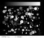
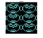
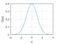
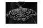
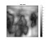
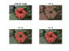

Video Tutorials (OpenCV 2.4)
A tutorial series contributed by Surya Penmetsa. You can find the codes used in the videos here.

|
Tutorial 1: Setup VideoThis is the first tutorial, where I explain how to install the softwares and get things working to use the OpenCV functions. |

|
Tutorial 2: Face Detection VideoThis is the second tutorial, where I explain how to use OpenCV functions to detect faces on MATLAB. |

|
Tutorial 3: Webcam Input VideoThis is the third tutorial, where I explain how to use OpenCV functions to record video input on MATLAB. |

|
Tutorial 4: Feature Extraction and Matching VideoThis is the fourth tutorial, where I explain how to use OpenCV functions to extract features to match objects on MATLAB. |
core: Core Functionality
Rotated RectangleThe sample demonstrates how to use |
|
Reading/Writing XML and YAML filesDemonstration of reading/writing from/to XML and YAML file storages. |
|
Serialization FunctionalityDemonstrate the usage of OpenCV serialization functionality. |
|
Image Blending GUIIn this demo, we add two images using |
|
Bitwise Operations on ImagesIn this demo, we show how to perform arithmetic operations on images like addition, subtraction, bitwise operations, etc. |
|
Brightness and contrast adjustments GUIIn this demo we show how to perform the operation: $g(i,j) = \alpha \cdot f(i,j) + \beta$. |
|
Image padding GUIIn this demo, we show how to use the OpenCV function |
|
inRange Thresholding Operations GUIIn this demo we show how to perform basic thresholding operations using OpenCV function |
|
Discrete Fourier TransformThis program demonstrated the use of the discrete Fourier transform (DFT). The DFT of an image is taken and it's power spectrum is displayed. |
|
KaleidoscopeDemonstrates Kaleidoscopic reflections. |
imgproc: Image Processing
Demonstration of drawing functionsThis program demonstrates OpenCV drawing and text output functions. |
|
Basic Geometric DrawingIn this demo, we show how to use basic drawing functions (line, ellipse, rectangle, circle, etc.). |
|
Demonstration of text drawing functionsDemonstration of text drawing functions. |
|
|  |
Colormaps GUISample shows how to apply false color on a grayscale image. |
Delaunay triangulation GUIThis program demostrates iterative construction of Delaunay triangulation and Voronoi tesselation. |
|
Convex Hull demo GUIWe learn how to get hull contours and draw them. |
|

|
Retrieve and label connected components from a binary image.The example below shows how to retrieve connected components from a binary image and label them. |
|  |
Contours DemoThis program illustrates the use of |

|
Watershed Demo GUIThis program demonstrates the famous watershed segmentation algorithm in OpenCV. |
Contours in OpenCVIn the sample, we will understand what contours are, and learn about the hierarchy of contours, and how to find and draw contours. |
|
Finding contours in an image GUIWe learn how to find contours of objects in our image. |
|
Flood-filling in an image GUIAn example using the Flood-Fill technique. |
|
Flood-Fill demoDemonstrates how to use |
|
Image ThresholdingIn this demo, we will learn about simple thresholding, adaptive thresholding, and Otsu's thresholding. |
|
Threshold demo GUISample code that shows how to use the diverse threshold options offered by OpenCV. |
|
Smoothing DemoSample code for simple filters. |
|
|  |
Smoothing ImagesIn this tutorial you will learn how to apply diverse linear filters to smooth images. |
Polar Transforms demo GUIThis program illustrates Linear-Polar and Log-Polar image transforms. |
|
Erosion and Dilation GUIIn this sample, you will learn how to apply two very common morphological operators: Erosion and Dilation. |
|
Advanced Morphology Transformations Demo GUIIn this sample you will learn how to use the OpenCV function |
|
Extracting horizontal and vertical lines using morphologyExample that uses morphology transformations for extracting horizontal and vertical lines. |
|
Hit-or-Miss Morphological OperationIn this tutorial you will learn how to find a given configuration or pattern in a binary image by using the Hit-or-Miss transform. |
|
Creating Bounding boxes and circles for contoursDemo code to find contours in an image, and create bounding boxes and circles. |
|
Creating Bounding rotated boxes and ellipses for contoursDemo code to obtain ellipses and rotated rectangles that contain detected contours. |
|
Fit ellipses GUIThis program is demonstration for ellipse fitting. The program finds contours and approximate them by ellipses. |
|
Robust Line Fitting GUIExample of using |
|

|
Image Moments GUIWe learn to calculate the moments of an image. |
Gabor Filter demo GUIA GUI to interact with the 5 different Gabor filter parameters, while visualizing the resulting filter. |
|
Fractalius-like image effect using Gabor filtersThis sample demonstrates the use of multiple Gabor filter convolutions to get Fractalius-like image effect. |
|
Line Segment Detector demoAn example using the |
|
Hough line detectorAn example using the Hough line detector. |
|
Hough circle detectorAn example using the Hough circle detector. |
|
Generalized Hough transformThis program demonstrates arbitrary object finding with the Generalized Hough transform. |
|
Interactive foreground extraction using GrabCut GUIInteractive foreground extraction using the GrabCut algorithm. |
|
Image pyramids for image blendingLearn about image pyramids and how to use them for image blending. |
|
Laplacian Pyramid Construction and Merging GUIThe Laplacian Pyramid as a Compact Image Code. |
|
Image Warping GUIThis program shows perspective transformation applied on an image. |
|
Interactive Perspective Transformation GUIThis program demonstrates Perspective Transformation. |
|
Image Alignment using ECC algorithmThis sample demostrates the use of the ECC image alignment algorithm. |
|
Corner DetectionIn this demo we will understand concepts behind Harris Corner Detection. We also learn about another corner detector, the Shi-Tomasi Corner Detector. |
|
Refining Corner Locations GUIDemo code for detecting corners using Shi-Tomasi method and refining corner locations. |
|
Template MatchingThis program demonstrates template match with mask. |
|
Phase Correlation GUIDemonstrates estimating translational shift between two successive frames using Phase Correlation. |
|
Convex HullThis sample program demonstrates the use of the |
|
Minimum Area EnclosingThis program demonstrates finding the minimum enclosing box, triangle or circle of a set of points. |
|
Connected Components GUIThis sample demonstrates connected components labeling. |
|
Canny Edge Detection GUIThis sample demonstrates Canny edge detection. |
|
Laplacian Edge Detection GUIThis program demonstrates Laplace point/edge detection using OpenCV function |
|
Create Binary Mask Interactively GUIInteractively create a polygon mask. |
|
Create Binary Mask Interactively (IPT)Interactively create a polygon mask. |
|
Interactive Rectangle SelectionSelect a rectangle by drawing a box using the mouse, using |
|
Distance Transform GUIProgram to demonstrate the use of the distance transform function between edge images. |
|
Intensity Image Histogram GUIThis program demonstrates the use of |
|
Histogram CalculationIn this demo, we show how to divide an image into its correspondent planes and calculate histograms of arrays of images. |
|
Histogram EqualizationIn this demo, we show what an image histogram is and why it is useful. |
|
Histogram ComparisonIn this demo, we show how to use the function |
|
2D HistogramWe explain how to create a 2D color histogram. |
|
Video Histogram GUIDemo to show live histogram of video, both 1D histograms of RGB channels and 2D histogram of Hue-Saturation. |
|
Back Projection GUIIn this demo, we will learn what is Back Projection and why it is useful. |
|
CAMShift GUIIn this demo, we learn about Meanshift and Camshift algorithms to find and track objects in videos. |
|
Histogram-based face tracker with CAMShiftIn this demo, we implement a simple face tracker applied on an input video. |
|
CLAHE (Contrast Limited Adaptive Histogram Equalization) GUIIn this demo, we will learn the concepts of histogram equalization and use it to improve the contrast of our images. |
|
Image RemappingIn this demo, we show how to use the OpenCV function |
|
Fun with remapMaps a rectangular image into a circle. |
|
Image Affine TransformationIn this demo, we show how to implement simple affine remapping routines. |
|
Image Pyramids GUIIn this demo, we show how to use the functions |
|
Sobel DerivativesIn this demo, we show how to calculate the derivatives of an image using the OpenCV functions |
|
|  |
Laplace OperatorIn this demo, we show how to use the OpenCV function |
Point Polygon TestIn this sample you will learn how to use the OpenCV function |
|
Points Inside Convex PolygonWe define a pentagon and a set of points. Then, determine which points lie inside, outside, or on the edge of the pentagon. |
|
Image Segmentation with Distance Transform and Watershed AlgorithmSample code showing how to segment overlapping objects using Laplacian filtering, in addition to Watershed and Distance Transformation. |
|
Wiener Deconvolution for Image Deblurring GUISample shows how DFT can be used to perform Weiner deconvolution of an image with user-defined point spread function (PSF). |
|
Texture flow direction estimationSample shows how |
|
Coherence-Enhancing Filtering GUICoherence-Enhancing Shock Filters. |
|
Multi-Scale Turing Patterns GeneratorGenerate mathematical artwork. |
|
Hi-Resolution Image Navigation GUISample shows how to implement a simple hi-resolution image navigation. |
|
Squares DetectorIt loads several images sequentially and tries to find squares in each image. |
imgcodecs: Image File Reading and Writing
Image similarity under lossy compressionSimilarity measurements (PSNR and SSIM). |
videoio: Media I/O
Video Capture GUIWe learn how to capture live stream from camera and display it, while adjusting basic video color properties. |
|
Creating a videoThis demo shows how to write video files. |
|
Synthetic videoDemonstrates using |
video: Video Analysis
Segment objects in Background Subtractor GUIAn example using drawContours to clean up a background segmentation result. |
|
Tracking of rotating point using Kalman filter GUITracking of rotating point. |
|
Dual TV-L1 Optical FlowOptical Flow Estimation using Dual TV-L1 method. |
|
Farneback Optical Flow GUIThis program demonstrates dense optical flow algorithm by Gunnar Farneback. |
|
Dense Optical Flow GUIDemo shows how to compute the optical flow for all the points in the frame using |
|
Sparse Optical Flow GUIIn this demo, we will understand the concepts of optical flow and its estimation using Lucas-Kanade method. |
|

|
Lucas-Kanade Sparse Optical Flow GUISparse optical flow to track points. |
Lucas-Kanade Optical Flow GUIA demo of Lukas-Kanade optical flow. |
|
Lucas-Kanade Tracker GUILucas-Kanade sparse optical flow demo. Uses |
|
Lucas-Kanade Homography Tracker GUILucas-Kanade sparse optical flow demo. Uses |
calib3d: Camera Calibration and 3D Reconstruction
Collect Calibration Pattern ImagesThis sample is used to take snapshots of a calibration pattern from live webcam. These images can be later used for camera calibration. |
|
Camera CalibrationThis example demonstrates camera calibration in OpenCV. |
|
Pose EstimationIn this sample, we learn to exploit calib3d module to create some 3D effects in images from a calibrated camera. |
|
Stereo Calibration with square chessboardDemonstration of stereo calibration, rectification, and correspondence. |
|
Stereo Image MatchingExample of stereo image matching to produce a disparity map and point cloud generation. |
|
Epipolar GeometryIn this sample we will learn about the basics of multiview geometry, and we see what is epipole, epipolar lines, epipolar constraint etc. |
feature2d: 2D Features Framework
FAST Algorithm for Corner DetectionIn this demo, we will understand the basics of FAST algorithm to find corners. |
|
ORB (Oriented FAST and Rotated BRIEF)In this demo, we will see the basics of ORB. |
|
Feature Matching + Homography to find a known objectIn this sample, you will use features2d and calib3d to detect an object in a scene. |
|
Affine invariant feature-based image matchingThis sample uses the affine transformation space sampling technique, called ASIFT. |
|
AKAZE local features matchingIn this demo, we will learn how to use AKAZE local features to detect and match keypoints on two images. We will find keypoints on a pair of images with given homography matrix, match them and count the number of inliers. |
|
AKAZE and ORB planar trackingIn this demo, we will compare AKAZE and ORB local features by using them to find matches between video frames and track object movements. |
|
Detect, Compute, and Match DescriptorsThis program demonstrates how to detect, compute, and match descriptors using various algorithms: ORB, BRISK, and AKAZE. |
|
Blob DetectionThis program demonstrates how to use BLOB to detect and filter region. |
|

|
Maximally Stable Extremal Regions (MSER)This program demonstrates how to use MSER to detect extremal regions. |
Multi-target planar trackingExample of using features2d framework for multiple planar targets tracking in a video using homography matching. |
|
Feature homography based planar trackingExample of using features2d framework with homography matching for tracking planar objects in a video. |
|
Planar augmented realityThis sample shows an example of augmented reality overlay over a tracked planar object to show its pose in 3D space. |
|
Correlation-based Tracking using MOSSE FiltersCorrelation filter based tracking using MOSSE filters (Minimum Output Sum of Squared Error). |
objdetect: Object Detection
Face Detection GUIHere is an example that illustrates how to detect faces in a live video stream. |
|
Face and Eyes Detection GUIIn this demo, we will learn the basics of face detection using Haar Feature-based Cascade Classifiers, and how the same extends for eye detection, etc. |
|
Facial Features DetectionA program to detect facial feature points using Haarcascade classifiers for face, eyes, nose and mouth. |
|
Smile Detection GUIThis program demonstrates the smile detector. |
|
DBT Face Detection GUIDetection-Based Tracker Face Detector. |
|
People Detection using HoG GUIThis program demonstrates the use of the HoG descriptor using the pre-trained SVM model for people detection. |
dnn: Deep Neural Network module
Deep Neural Network with Caffe modelsIn this tutorial you will learn how to use DNN module for image classification by using GoogLeNet trained network from Caffe model zoo. |
|
|  |
Fully-Convolutional Networks for Semantic SegmentationFully Convolutional Models for Semantic Segmentation. |
DNN Image ClassificationImage Classification task using DNN. |
|
DNN Semantic SegmentationThis sample demonstrates semantic segmentation, where we label each pixel in the image with a category label. |
|
DNN Object DetectionThis sample uses Single-Shot Detector to detect objects on image (produces bounding boxes and corresponding labels). |
|
DNN Face DetectionFace detector based on SSD framework (Single Shot MultiBox Detector). |
|

|
DNN Face RecognitionFace detection and recognition based on SSD and OpenFace embedding. |
DNN: Style TransferMaps the artistic style of various pieces of artwork onto input image. |
ml: Machine Learning

|
K-Means ClusteringThis program demonstrates kmeans clustering. It generates an image with random points, then assigns a random number of cluster centers and uses kmeans to move those cluster centers to their representitive location. |
EM ClusteringDemonstrates EM clustering. |
|
Gaussian Mixture Model (GMM)Demonstrates EM clustering, and also compares againt K-means clustering. |
|
|  |
K-Means Color QuantizationWe will learn how to use |
Comparison of different classifiers on the same datasetThis demonstrates an example of machine learning algorithms in a simple classification problem. It compares different classifiers using the same data samples. |
|

|
Showcase different classifiersExample using different classifiers. |

|
Logistic RegressionLogistic Regression to classify hand-written digits. |
Support Vector Machines (SVM)In this sample, you will learn how to use the OpenCV function |
|
K-Nearest Neighbors (KNN)In this demo, we will understand the concepts of k-Nearest Neighbour (kNN) algorithm, then demonstrate how to use kNN classifier for 2D point classification. |
|
Principal Component Analysis (PCA)In this demo, you will learn how to use the OpenCV class |
|
PCA for dimensionality reductionThis program demonstrates how to use OpenCV PCA with a specified amount of variance to retain. |
|
SVMSGD Interactive Classification GUITrain a classifier with SVMSGD algorithm that can handle linearly separable 2-class dataset. |
|
OCR of hand-written digits using KNNWe will use kNN to build a basic OCR application. |
|
OCR of English letters using KNNWe will use kNN to build a basic OCR application. |
|
OCR of hand-written digits using HoG and SVMIn this tutorial, we will build an SVM classifer to recognize hand-written digits (0 to 9), using Histogram of Oriented Gradients (HOG) as feature vectors. |
photo: Computational Photography
High Dynamic Range ImagingIn this tutorial we show how to generate and display HDR image from an exposure sequence. |
|

|
Inpainting GUIWe will learn how to remove small noises, strokes, etc. in old photographs by a method called inpainting. |
Non-Photorealistic RenderingThis tutorial demonstrates how to use OpenCV Non-Photorealistic Rendering Module. |
|
Seamless CloningThis tutorial demonstrates how to use OpenCV seamless cloning module. |
|
Non-Local Means Image DenoisingIn this demo, we will learn about Non-local Means Denoising algorithm to remove noise in an image. |
stitching: Images Stitching
Simple rotation model images stitcherA basic example on image stitching. |
|
Rotation model images stitcherA detailed example on image stitching. |
shape: Shape Distance and Matching
Shape context for shape matchingThis program demonstrates a method for shape comparison based on Shape Context. |
superres: Super Resolution
Super Resolution algorithms for video sequenceThis sample demonstrates Super Resolution algorithms for video sequence. |
videostab: Video Stabilization
Video StabilizerThis sample demonstrates video stabilization algorithms for video sequence. |